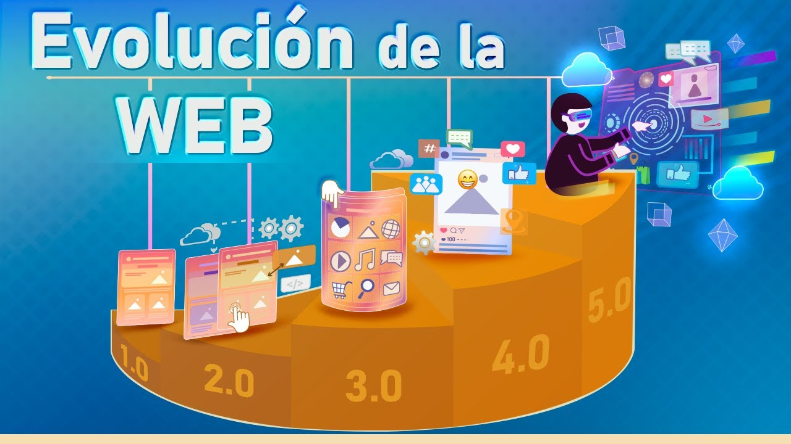

Impacto de las Tecnologías Web en la Sociedad y los Negocios
Transformación digital, conectividad global y nuevos modelos económicos en la era de Internet
La Revolución de la Web Moderna
De páginas estáticas a ecosistemas inteligentes
Desde la creación de la World Wide Web a inicios de la década de 1990, las tecnologías web han evolucionado de simples documentos hipertextuales estáticos hacia plataformas interactivas, aplicaciones en la nube y sistemas impulsados por inteligencia artificial. Según Castells (2021), Internet constituye el tejido estructural de nuestras vidas, articulando la comunicación, el trabajo y la producción económica a escala planetaria.
Actualmente, estándares abiertos como HTML5, CSS3 y JavaScript permiten construir experiencias multiplataforma accesibles desde cualquier dispositivo conectado, democratizando el acceso a la información y reduciendo las barreras geográficas.
Figura 1. Interconexión global impulsada por estándares web modernos.
Pilares tecnológicos de la transformación actual
El impacto contemporáneo de la web se sustenta en la convergencia entre la computación en la nube, la movilidad, el análisis de macrodatos (Big Data) y el diseño centrado en el usuario. Estas herramientas han redefinido tanto la convivencia ciudadana como la competitividad empresarial.
Accesibilidad universal: Acceso inmediato a servicios públicos, banca y educación desde navegadores web.
Interoperabilidad: Integración entre sistemas mediante arquitecturas API REST y servicios en la nube.
Colaboración en tiempo real: Plataformas que permiten el teletrabajo y la creación conjunta sin importar la ubicación física.

Figura 2. Adaptabilidad de las aplicaciones web en computadoras y dispositivos móviles.